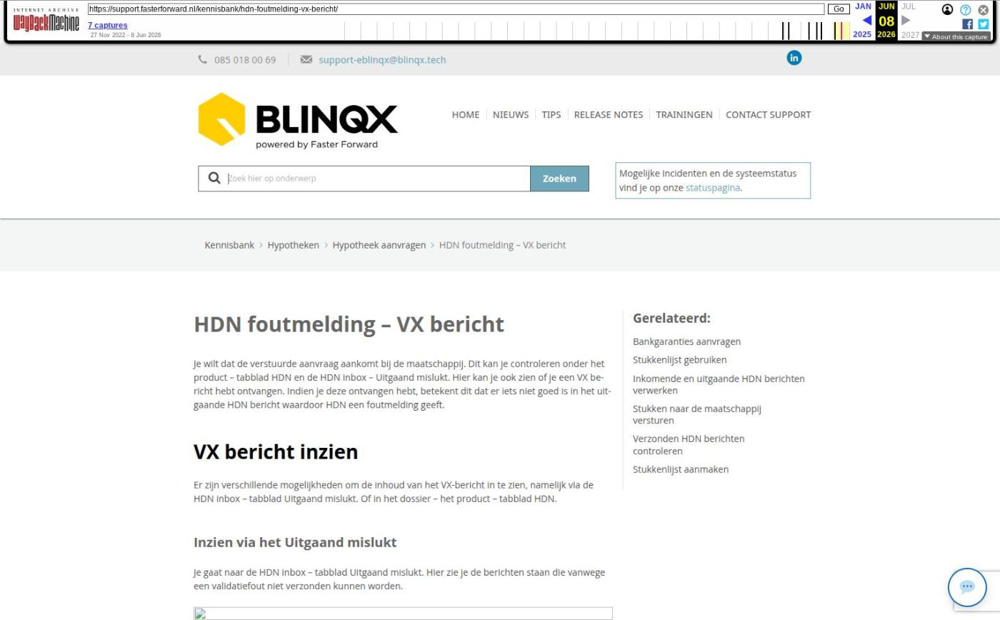

HDN foutmelding – VX bericht

Tekstinhoud
HDN foutmelding – VX bericht
Je wilt dat de verstuurde aanvraag aankomt bij de maatschappij. Dit kan je controleren onder het product – tabblad HDN en de HDN inbox – Uitgaand mislukt. Hier kan je ook zien of je een VX bericht hebt ontvangen. Indien je deze ontvangen hebt, betekent dit dat er iets niet goed is in het uitgaande HDN bericht waardoor HDN een foutmelding geeft.
VX bericht inzien
Er zijn verschillende mogelijkheden om de inhoud van het VX-bericht in te zien, namelijk via de HDN inbox – tabblad Uitgaand mislukt. Of in het dossier – het product – tabblad HDN.
Inzien via het Uitgaand mislukt
Je gaat naar de HDN inbox – tabblad Uitgaand mislukt. Hier zie je de berichten staan die vanwege een validatiefout niet verzonden kunnen worden.
Door te klikken op het logfile-icoon verschijnt er een pop-up waarin de inhoud van de VX-melding staat.
De inhoud van de VX-melding heeft betrekking op de inhoud van het XML bericht van het HDN bericht wat je wilt verzenden.
De belangrijkste velden in dit bericht zijn 'message' en 'location'.
In het veld message wordt aangegeven wat er fout is. Daarnaast staat er in het veld 'location' waar je de fout kunt vinden.
De fouten dienen aangepast te worden in jouw adviespakket. Vervolgens kan je het advies opnieuw naar eBlinqx sturen en via HDN naar de maatschappij versturen.
Inzien vanuit het klantdossier
Je kan de VX foutmelding ook terug zien vanuit het klantdossier. Ga hiervoor naar het product – tabblad HDN.
Beheerders zien ook hier het logfile-icoon, waarmee ze de VX foutmelding in de pop-up kunnen zien. Andere gebruikers moet het VX bericht downloaden of klikken op het vergrootglasicoon om de foutmelding duidelijk in te zien.
De download kan je openen door deze naar een nieuw tabblad in jouw browser te slepen of door deze te openen in Wordpad.
Hieronder een voorbeeld van een VX bericht:
De belangrijkste velden in dit bericht zijn 'message1' en 'location'.
In het veld message1 wordt aangegeven wat er fout is, dit staat tussen aanhalingstekens. In het voorbeeld hierboven betreft het, het e-mailadres. Achter het e-mailadres is een spatie, dit wordt niet door HDN geaccepteerd.
Daarnaast staat er in het veld 'location' waar je de fout kunt vinden. In het voorbeeld hierboven betreft het, het e-mailadres van hypotheekgever 1.
De fouten dienen aangepast te worden in jouw adviespakket. Vervolgens kan je het advies opnieuw naar eBlinqx sturen en via HDN naar de maatschappij versturen.
Laatste update: 15 oktober 2025
Was deze informatie nuttig?
Ja Nee